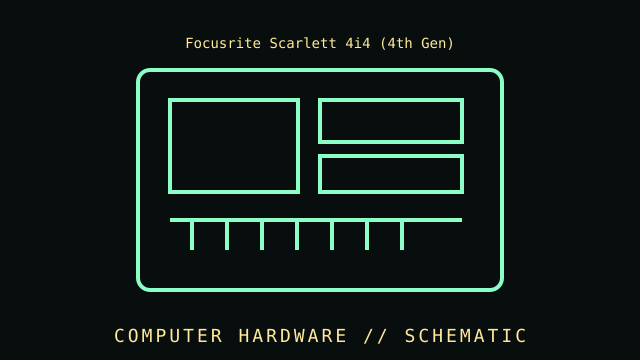

[ INDIVIDUAL COMPONENT // SOUND ]
Focusrite Scarlett 4i4 (4th Gen)
Four-in/four-out studio interface with two microphone preamps, additional line inputs, MIDI, and independently routable outputs. USB-C desktop audio interface, fourth generation, released 2023.

IDENTIFICATION WARNING: Verify the full product generation, model identifier, memory or I/O configuration, and revision against the manufacturer documentation; adjacent variants may differ significantly.
Specifications
| Catalog subcategory | USB audio interfaces |
|---|---|
| Catalog identity | Focusrite Scarlett 4i4 (4th Gen) |
| Era / family | USB-C desktop audio interface, fourth generation, released 2023. |
| Analogue inputs | Two mic/line/instrument preamps plus two additional line inputs; phantom power and selectable Air modes are provided for supported inputs. |
| Analogue outputs | Four line outputs plus one headphone output; routing and independent monitor mixes are configured through Focusrite Control 2. |
| Digital and MIDI I/O | USB-C connector using USB 2.0 protocol; MIDI input and output; loopback channels supported. |
| Conversion | Up to 24-bit/192 kHz operation; available sample rates include 44.1, 48, 88.2, 96, 176.4, and 192 kHz. |
| Power and dimensions | USB bus-powered at the specified 1.5 A supply capability, with optional external supply; 180 × 130 × 60 mm, approx. 0.798 kg. |
| Identification | Scarlett 4i4 fourth generation, manufacturer SKU MOSC0034; do not conflate with 3rd-generation 4i4 or Scarlett 2i2, which has different I/O. |
Compatibility, installation & service
- Check required host interface, supported OS/firmware, power supply, physical mounting, and accessories before installation.
- Record the complete model, SKU, board revision, firmware, accessories, and source-document revision for the specific unit.
- Do not infer capability from connector appearance alone; verify the manufacturer's manual and supported host configuration.
- Keep ventilation clear and use documented power, thermal, cabling, and ESD handling practices.
Model-specific notes
The 4i4 fourth generation is distinguished by its four line outputs, extra line inputs, and MIDI I/O; port counts and routing differ from the smaller 2i2. Confirm driver/app support for the host operating system and configure sample rate, buffer size, and direct/software monitoring for the intended session.
Sources & further reading
- Focusrite — Scarlett 4i4 product and specificationsManufacturer product reference for the identified model and published specifications.
- Focusrite — Scarlett 4th Gen user guidesManufacturer technical brief or user documentation; confirm the document revision for the unit.
Specifications describe the cited product family; SKU, region, and revision should be checked against the physical unit.